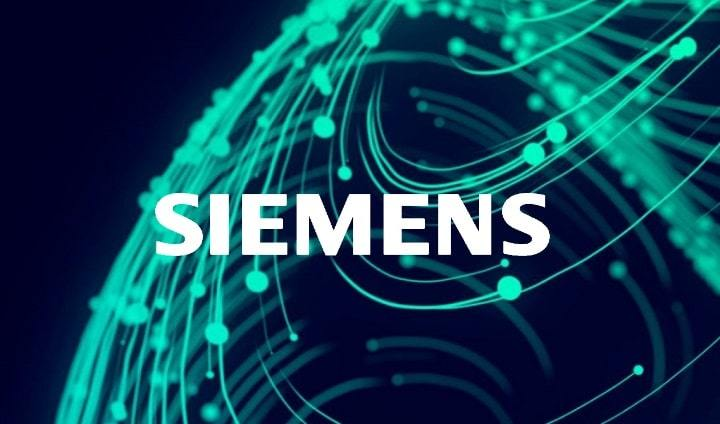
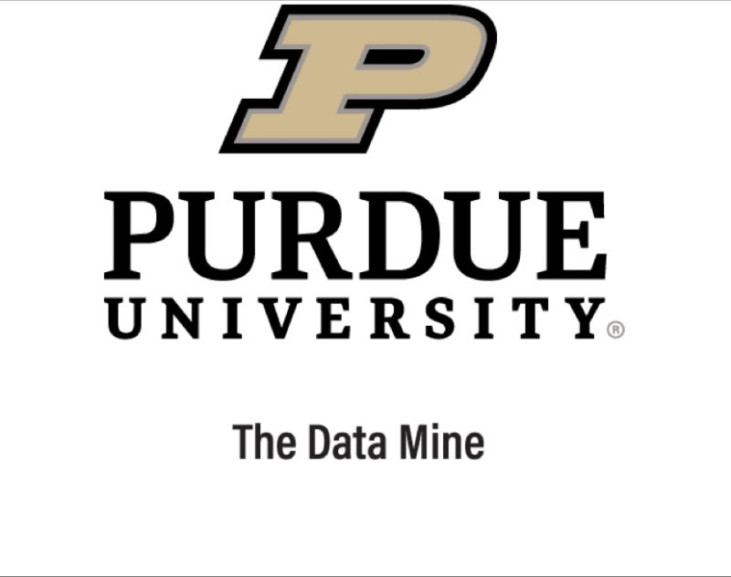

Professional Experience

Siemens
Software Engineer Intern
- Contributed to feature development and debugging within a large-scale industrial platform.
- Created, configured, and maintained automated test cases to validate multiple modules.
- Analyzed logs and system behavior to troubleshoot issues, ensuring test reliability.
- Collaborated with cross-functional teams to improve automation and clarity in test scripts.
- Technologies: Java, C++, VS Code, Microsoft Visual Studio, Eclipse, SOA, Siemens Teamcenter PLM

The Data Mine
Undergraduate Data Science Researcher
- Collaborated with Allison Transmission to cluster vehicles by usage metrics.
- Applied statistical analysis and machine learning to uncover trends.
- Used Python, R, and SQL for data wrangling and visualization.
- Built predictive models to assist in data-driven decision-making.
- Gained hands-on experience with data cleaning, modeling, and presentation.